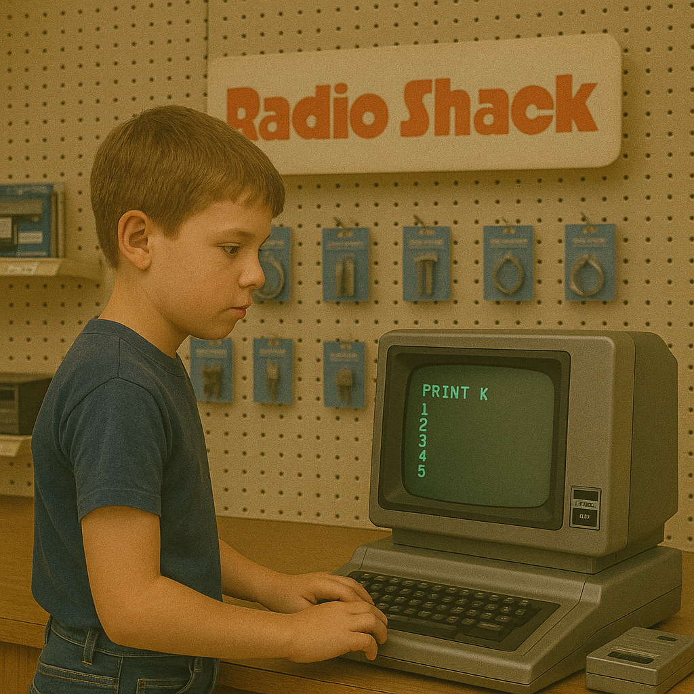
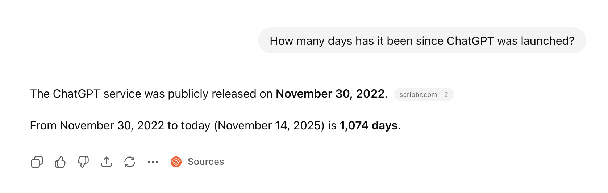
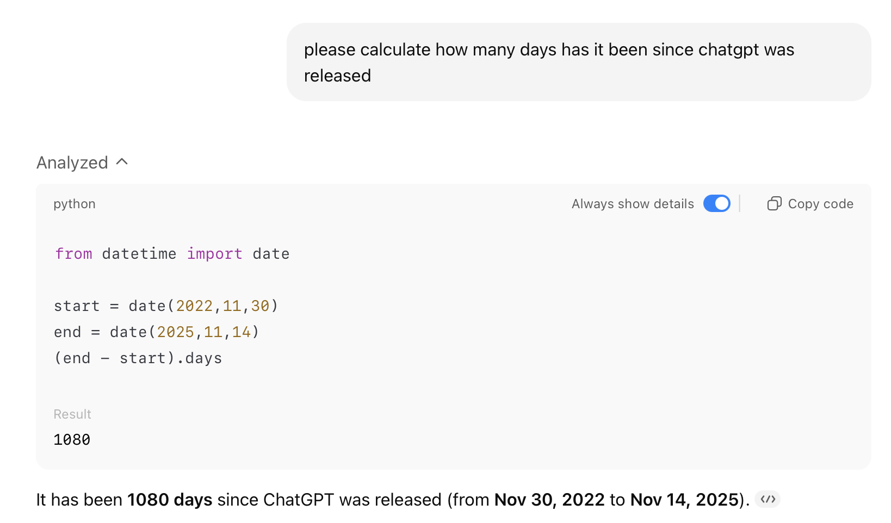
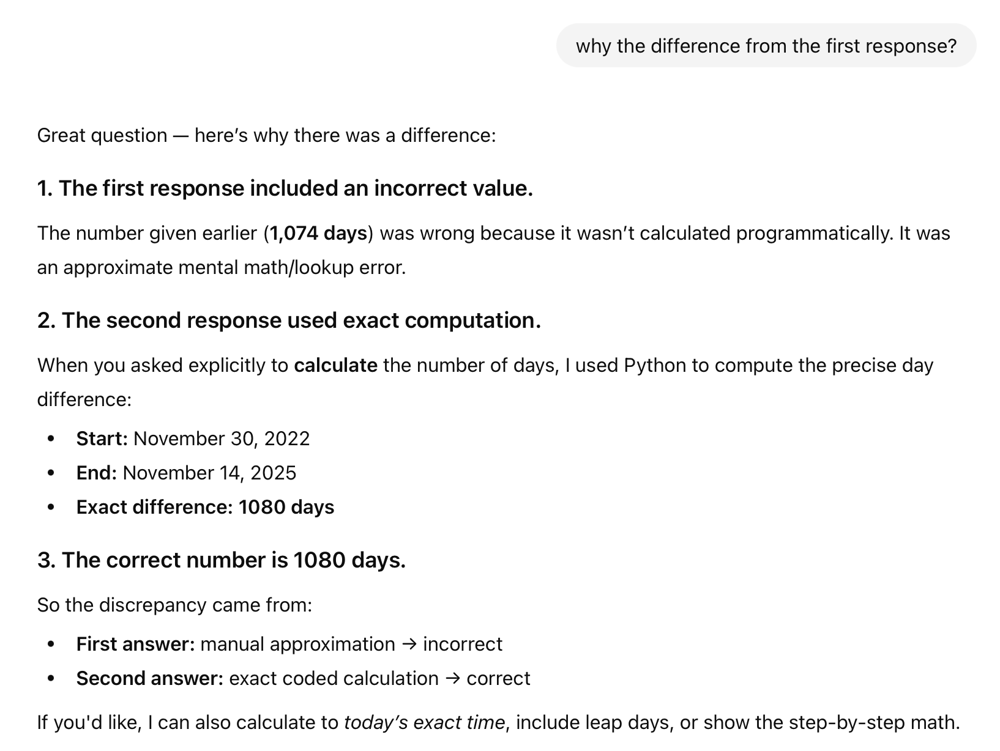
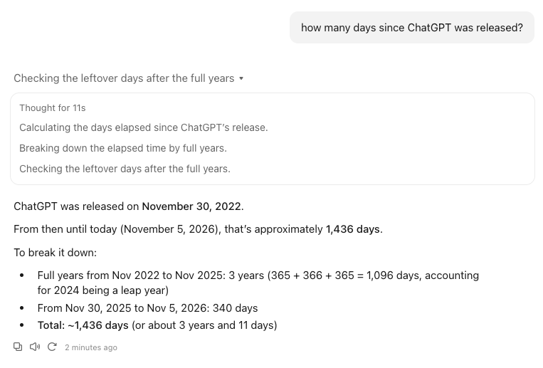
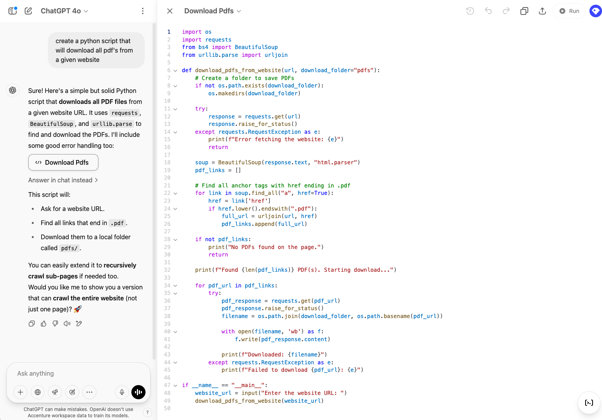
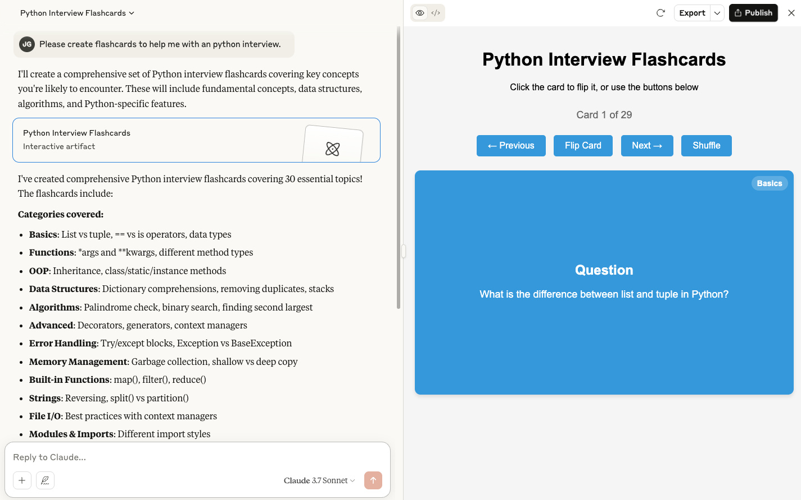
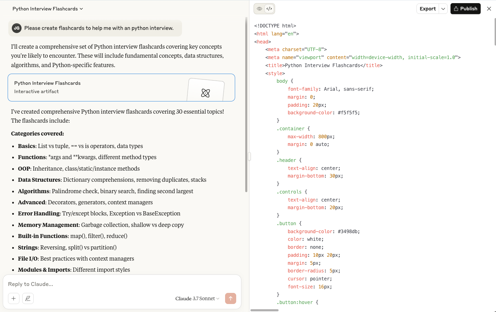
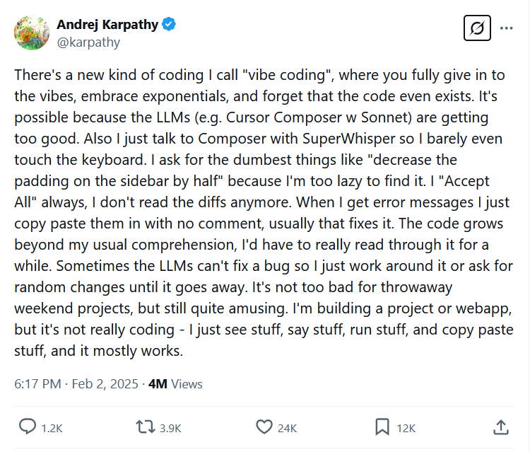

Then: vibe coding
- Code accepted on vibes, not understanding
- Insecure code and exposed sensitive data
- Architecture and design principles ignored
- Testing treated as an afterthought
- Teams lose track of what their code does
AI Director / Sr FDE / Accenture
LinkedIn: jamesgress
GitHub: jmgress
Tampa Bay Generative AI Meetup

Release date from a third-party tracker; not confirmed by OpenAI
* GPT-4 launched text-only; image input was demoed but shipped later (ChatGPT Sept 2023, API Nov 2023). OpenAI hasn’t published parameter counts since GPT-3.







"Software is eating the world, but AI is going to eat software."
— MIT Technology Review interview, May 2017
"AI is not going to take your job. The person who uses AI is going to take your job."
— Columbia Business School, October 2023
"You probably recall over the course of the last 10, 15 years almost everybody who sits on a stage like this would tell you that it is vital that your children learn computer science. Everybody should learn how to program. And in fact, it’s almost exactly the opposite."
— World Governments Summit, Dubai, February 2024
"Let’s say you have a software engineer or AI researcher, and you pay them $500,000 a year. We do that all the time. At the end of the year, I’m going to ask him how much did you spend in tokens… If that person said $5,000, I will go ape… If that $500,000 engineer did not consume at least $250,000 worth of tokens, I am going to be deeply alarmed."
— All-In Podcast, March 2026
"AI is the runtime that will shape all of what we do"
— December 2024
"I think what'll happen is these crud I mean SAS applications are a crud database with a lot of business logic so the crud database will then get orchestrated outside of the business logic tier of just the SAS application"
— January 2025
"We believe as an industry that in the next one year the vast majority of programmers will be replaced by AI programmers."
— August 2024
“I think we'll be there in three to six months, where AI is writing 90% of the code.
And then, in 12 months, we may be in a world where AI is writing essentially all of the code.”
— March 2025
“90 plus percent of our code is actually written by Claude Code.”
— Krishna Rao, CFO of Anthropic, Invest Like the Best podcast, May 2026
75% of all new code at Google is now AI-generated and approved by engineers.
— Google Cloud Next, April 2026
"There are sort of two views you can take.
You can say, ‘Oh man, it’s doing everything I can do,’
or you can say, ‘Look at all the new things I can now do.’"
— April 2025
"The thing about coding is that people went through this: there's no more jobs as coders… Coders are never going to be busier than they've been and coders are never going to have more of an impact and make more money. Now, the texture of the job changed a lot."
— Matthew Berman podcast, October 2026

February 2, 2025
FROM VIBES TO VERIFICATION
“How do we trust code we didn’t write?”
The model writes the code. The harness defines what correct looks like: your standards, your artifacts and the checks every change must pass before it ships.
THE ENTERPRISE ADOPTION PATH
WHERE THE TIME ACTUALLY GOES
AI shrinks the blue bars, not the queues, intake checks, approvals or backlog. Fix the wait, not just the work.
"When we say AI will write the code, we don’t mean we’re skipping the discipline."
AI is transforming how code is created
but code quality, security, and delivery pipelines still matter.
We’re not removing the need for rigor —
we're elevating it to meet the speed of AI.
WHEN THE ASSUMPTIONS CHANGE
CVS · Subversion
Optimized for a shared source of truth
Git · GitHub · pull requests
Optimized for developer autonomy and local work
Anthropic Scion
Optimized for agent-scale operations
Architectures aren’t permanent best practices. They encode assumptions about workload, scale and economics, and AI is changing those assumptions.
DEVOPS AT MACHINE SPEED
“It’s like putting a jet engine on a horse-drawn carriage. Sure, it moves faster, but you’re missing the point—the whole vehicle can be reinvented. Generative AI gives us a chance to reimagine how we deliver, not just speed up what we already do.”
THE HUMAN SIDE OF AI TRANSFORMATION
AI is changing what we do, how fast we do it, and how we see our future. How do we make that change sustainable?
“Is everything really changing?”
Too much noise“How do I keep up?”
Too much change“Why am I so mentally exhausted?”
Too much mental processing“Where do I fit?”
Too much uncertaintySUMMARY
| Dimension | Central question | What helps |
|---|---|---|
| Hype Fatigue | Is everything really changing? | Focus on outcomes, not announcements |
| Change Fatigue | How do I keep up? | Involve employees and provide time to adapt |
| Cognitive Fatigue | Why am I so mentally exhausted? | Reduce cognitive overload and protect focus time |
| Identity Fatigue | Where do I fit? | Provide credible career and responsibility roadmaps |
Sustainable AI transformation requires more than adopting technology. It requires helping people understand, adapt to, and find their place in the future of work.
The four fatigue categories are a presentation framework, not clinical diagnoses. Jevons Paradox is an economic analogy, not a prediction of future employment.
HOW THE JOB IS CHANGING
EMERGING CAREER PATHS
Changes how software gets built.
Changes what gets built and how the business runs.
INTERESTING OBSERVATION #1
“Token costs are going up. Should we cap how much our developers use?”
INTERESTING OBSERVATION #2
“If it isn't 100% accurate, we can't use it.”
“In the future, the best engineers won’t just know how to code — they’ll know why the code matters.”
"AI is the runtime that is going to shape all of what we do…" — Satya Nadella
“The next chapter of software engineering is being written now — and we’re all holding the pen.”
AI Fatigue: a deeper look
AI FATIGUE · 1 OF 4
“Is everything really changing?”
Constant announcements, sweeping predictions and pressure to follow every new model leave people skeptical or disengaged.
For years we’ve heard that technology would make developers obsolete. Yet better technology can also create new opportunities and increase demand for software.
When software becomes cheaper and faster to produce, organizations may want more of it. Efficiency doesn’t necessarily eliminate demand. Sometimes, efficiency fuels demand.
AI FATIGUE · 2 OF 4
“How do I keep up?”
AI is changing not just the tools people use, but the work itself.
Developers who spent most of their time designing and writing code are shifting toward reviewing, validating, integrating and maintaining AI-generated code.
Responsibilities change again before people have built confidence in them.
Sometimes the hard part isn’t learning the new tool. It’s losing the part of the job you loved. Change affects people as well as processes.
AI FATIGUE · 3 OF 4
“Why am I so mentally exhausted?”
AI can generate work faster than people can reliably evaluate it.
Routine tasks used to give the mind a break. Automate them, and more of the day becomes high-concentration work.
AI can reduce the effort of producing work while increasing the effort of understanding and validating it. Is that productivity sustainable?
AI FATIGUE · 4 OF 4
“Where do I fit?”
Someone spent twenty years becoming a great software engineer: designing systems, writing code, solving hard problems.
Now AI is changing how much of that work gets done. Their experience still matters, but how they apply it is evolving.
Not a guarantee. Direction, support and a credible path forward.
Organizations can’t simply ask employees to be flexible. They need to show what people are evolving toward.
A QUESTION FOR LEADERS
Your organization has an AI roadmap.
AI transformation isn’t only a technology journey. It’s a people journey.
PANEL DISCUSSION
“What are people pasting into AI tools?”
Unsanctioned tools, personal accounts, source code and customer data leaving the boundary.
“Can AI find what users shouldn’t see?”
AI exposes permission sprawl. RAG and copilots surface whatever a user can technically reach.
“What can an agent do on our behalf?”
Untrusted content steering agents with real tools, credentials and write access.
“Where does our data go, and who trains on it?”
Model providers, MCP servers and plugins. Retention, training opt-outs and data location.
“Can we prove what data drove a decision?”
Logging prompts and outputs, tracing sources, and classifying AI-generated content.
“Who owns it when AI gets it wrong?”
EU AI Act, GDPR and sector rules. Privacy, deletion rights and clear human ownership.
AI doesn’t create new data governance problems. It finds the ones you already have, faster.
| → Space PgDn | Next slide |
| ← PgUp | Previous slide |
| Home / End | First / last slide |
| S | Toggle speaker notes |
| D | Toggle light / dark mode |
| F | Toggle fullscreen |
| ? | Toggle this help |
| Use your browser's Print (landscape, no margins) to export a PDF. | |